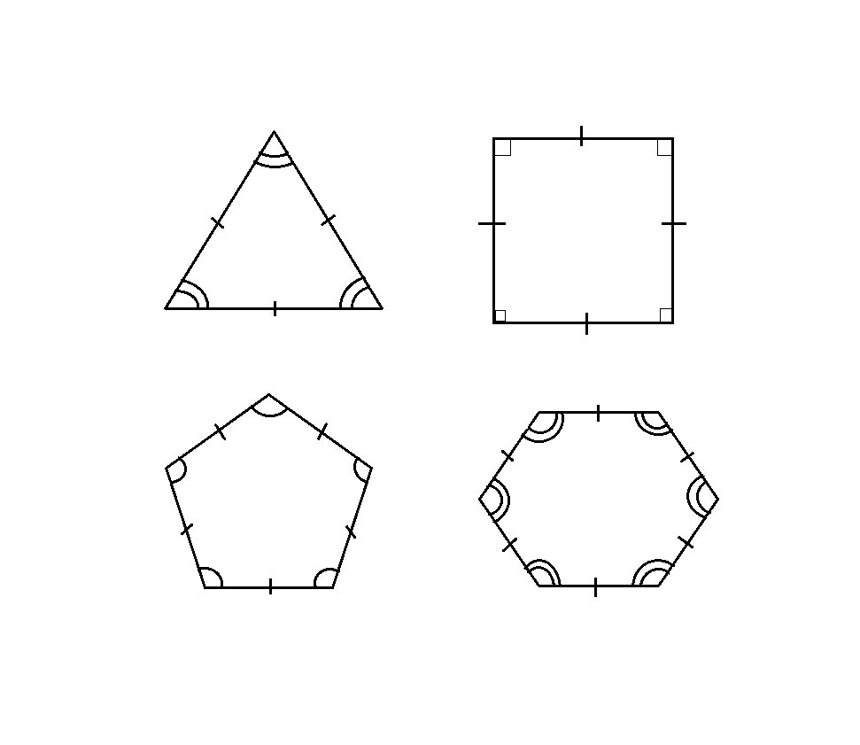
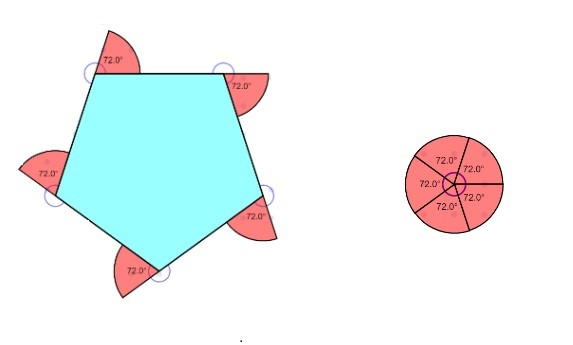

- A polygon is a two-dimensional closed figure formed by joining three or more line segments with each other.
- A polygon is a mixture of two words: poly (many) and gon (sides).
For example: a triangle is a polygon with at least three sides. It is often referred to as a 3-gon. The term "n-gon" refers to an n-sided polygon.
Polygon Shape:
By definition, a polygon is made up of line segments. The following are the shapes of several polygons that are surrounded by varying numbers of line segments.
Types of Polygon
Polygons are categorised into distinct categories based on their sides and angles, which are:
- Regular Polygon
- Irregular Polygon
- Convex Polygon
- Concave Polygon
Regular Polygon
A polygon is referred to as regular if all of its sides and interior angles are equal. Regular polygons include squares, equilateral triangles, and other shapes.

Irregular Polygon
A polygon is considered irregular if its inner angles and all of its sides have different measures. This indicates that for a polygon to be considered irregular, it only needs to have different angles or different side lengths. For example, a kite, a rectangle, a scalene triangle, etc.
Convex Polygon
A polygon is referred to as convex if every internal angle is strictly less than 180 degrees. The vertex will point outwards from the centre of the shape.
Concave Polygon
A polygon is referred to as concave if one or more of its interior angles are greater than 180 degrees. There can be at least four sides in a concave polygon. The vertex is orientated towards the polygon's interior.
However, a variety of polygons are identified by their properties, angles, and number of sides.
Types of Polygons Based on the Number of Their Side
Diagonals
A diagonal is a line segment that connects two opposite vertices or corners of a polygon.
Diagonals for polygons of all shapes and sizes can be created, and for each shape, the number of diagonals can be calculated using a formula.
For example: The below given figure has four sides.
We denote these sides by symbol n.
Now, we can calculate the number of diagonals by using formula n (n-3)/2
Therefore, number of diagonals in given shape = n (n-3)/2
= 4(4-3)/2
= 4/2 = 2
Therefore the given shape has two diagonals.
Angles of Polygon
As we know, a polygon has the same number of vertices as it has sides. Every corner has a specific measure of angles. These angles are divided into two types: interior and exterior angles of a polygon.
Interior Angle Property
- We can find the sum of interior angles in a polygon by dividing the polygon into triangles.
- The sum of interior angles in a triangle is 180°.
- The number of triangles in each polygon is two less than the number of sides. In general we can conclude that, if a polygon has n sides so it is made up of (n–2) triangles
Now, let’s calculate the interior angles of the following figures given below:
In figure 1:
Number of sides (n) = 3
Number of triangles = n - 2 = 3 -2 = 1
The sum of interior angle = (3 -2) x 180° = 180°
In figure 2:
Number of sides (n) = 4
Number of triangles = n - 2 = 4 -2 = 2
The sum of interior angle = (4 -2) x 180° = 360°
Thus, sum of all the interior angles of a simple n-gon = (n − 2) × 180°
Where ‘n’ is equal to the number of sides of a polygon.
For example, a quadrilateral has 5 sides, therefore, the sum of all the interior angles is given by:
Sum of interior angles of 5-sided polygon = (5 – 2) × 180°
= 3 × 180°
= 540°
Exterior angle property
If the side of a polygon is extended, the angle formed outside the polygon is the exterior angle. The sum of the exterior angles of a polygon is 360°.
In the figure below the angles formed outside the polygon is 72° each.
As you extend each side and measure each exterior angle, you effectively walk around a circle because the sum of all the turns you make (each exterior angle) adds up to a full circle (360 degrees).

The formula for calculating the size of an exterior angle is:
Exterior angle of a polygon = 360°/number of sides (n)
The sum of the interior and the corresponding exterior angles at each vertex of a polygon are supplementary to one another.
For a polygon:
- Interior angle + Exterior angle = 180 degrees
- Exterior angle = 180 degrees – Interior angle
Properties:
The sides and angles of a polygon determine its properties.
- The sum of interior angles in an n-sided polygon is (n - 2) × 180°.
- The number of diagonals in a polygon with n sides is n(n - 3)/2
- The number of triangles created by combining the diagonals from one corner of a polygon = n - 2.
- The measure of each interior angle of an n-sided regular polygon is [(n-2) × 180°]/n.
- The measurement of each exterior angle of an n-sided regular polygon is 360°/n.